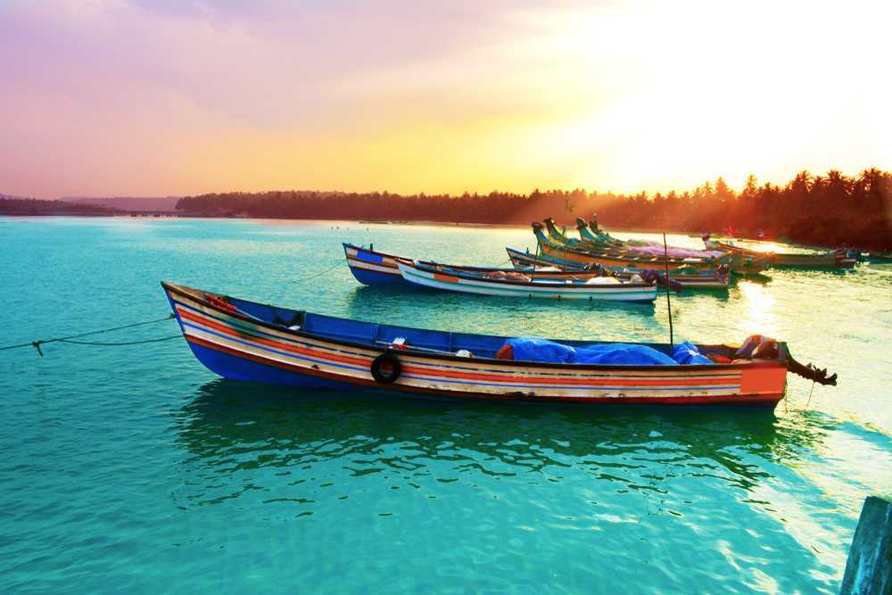

BackPackers

Discover the magic of Kerala, where beauty meets tranquility.
Nature is at its best in Kerala with beaches covered with palm trees presenting a breathtaking setting all together. Beaches at Kovalam and Varkala are sure to tempt you to take a dip in the cool and fresh water of the sea.
The tranquility of the backwater of Kumarakom and Kuttanad and thick lush forests of Thekkady and Silent Valley also offer a respite from the daily hustle bustle. The calmness of the hills of Munnar and Vagamon is sure to awaken the soul inside you.
Top 10 attractions in Kerala

Kochi-Queen of Arabian Sea
A melting point of numerous culture and traditions, Cochin has embraced all the modern outlook to become one of the most developed metropolis in India. Be it the essence of the Dutch establishments, British history, Chinese nets, or the traditional spice markets, Cochin will surely make you fall in love once again!

Munnar-Kashmir of South India
gorgeous hill station in the lap of the fascinating Western Ghats, Munnar needs no introduction. Rising 1,600m above the sea level, a vacation in the beguiling locales of this hilly retreat is all about the lofty clouds, picturesque mountains, rolling hills, and a soothing ambience.
Varkala-The hidden treasure of Kerala
Varkala is a coastal town in the southern part of Kerala known for the unique 15m high 'Northern Cliff' adjacent to the Arabian Sea. It is popular for its hippie culture, shacks on the cliff serving great seafood and playing global music and the samadhi of Kerala's saint Sree Narayana Guru. Varkala is also known for Jardana Swami Temple, also known as Dakshin Kashi.
Vagamon-Scotland of Asia
Located near Kottayam-Idukki Border, Wagamon, popularly known as Vagamon, is a quiet offbeat hill station in Kerala. With a pleasant climate throughout the year, this breathtaking tourist spot has meandering rivulets and lush green hills surrounding it. The tea garden, pine forests, waterfalls, mesmerising meadows are all that makes Vagamon the perfect getaway.

Kovalam-Beaches and Ayurveda
If you are a beach goer, and is still assuming none can beat the charm and allurement of Goa or other popular beach destinations, you must visit Kovalam today! Located along the coastlines of the charismatic Arabian Sea, this beach town is undoubtedly one of the best tourist attractions to visit in Kerala.

Poovar-The Fishing Villege
Poovar island lies between the Arabian Sea and the Neyyar River. Hiring a boat,especially during the sunset that will take you through the mangrove forest of backwaters is a must-do activity. The boat ride costs around INR 3000- INR 4000. The town has some of the beautiful resorts and hotels that are known for the hospitality they offer. Poovar beach is secluded and is only accessible by a boat.

idukki-Spice Garden of Kerala
Idukki, a landlocked district of Kerala, is one of the most nature-rich areas in Kerala with more than half of the area covered with forest. This rugged hill resort is known for its wildlife sanctuaries, beautiful bungalows, tea factories, rubber plantations and forests. Idukki's speciality lies in 650 feet long and 550 feet high arch dam across the Kuravan Kurathi mountain

Kozhikode-A colonial city of trade
Step in to Payyoli Beach in Kozhikode district and get ready to be blown away by its golden sands, shallow waters, swaying palm trees and calm environs.Lush green countryside, serene beaches, historic sites, wildlife sanctuaries, rivers and hills make Kozhikode a popular destination.
Bekal-Beaches, Backwaters and forts
Shaped like a giant keyhole, the Bekal fort is bordered by the Arabian on three sides. A set of 45 caves called the Nityanandashram caves, Kappil Beach and Chandragiri fort are few of the other major attractions. Bekal was also selected as one among the top ten travel destinations by Lonely Planet.

Ponmudi-The Golden Peak
Nestled in the lap of rolling hills of the Western Ghats, enveloped with tea plantations, lush green hills and valleys, waterfalls and streams; Ponmudi is a quaint little town in Trivandrum, Kerala. Trekking and mountain climbing on Agasthayarkoodam, the highest peak in the region is the most popular activity
Kerala Tour Packages

Kerala Houseboat Package
INR 29000 (-10%off)
26,000/-
6 Days and 5 Nights Family Tour of Kerala
INR 33500 (-16%off)
27,099/-
Luxury Kerala Honeymoon Package
INR 66500 (-30%off)
49,999/-
Best 4 day Trip to Kerala
15,999/-